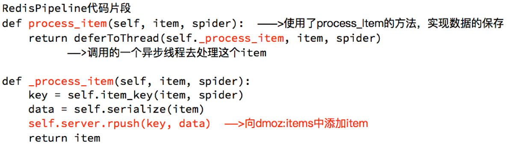
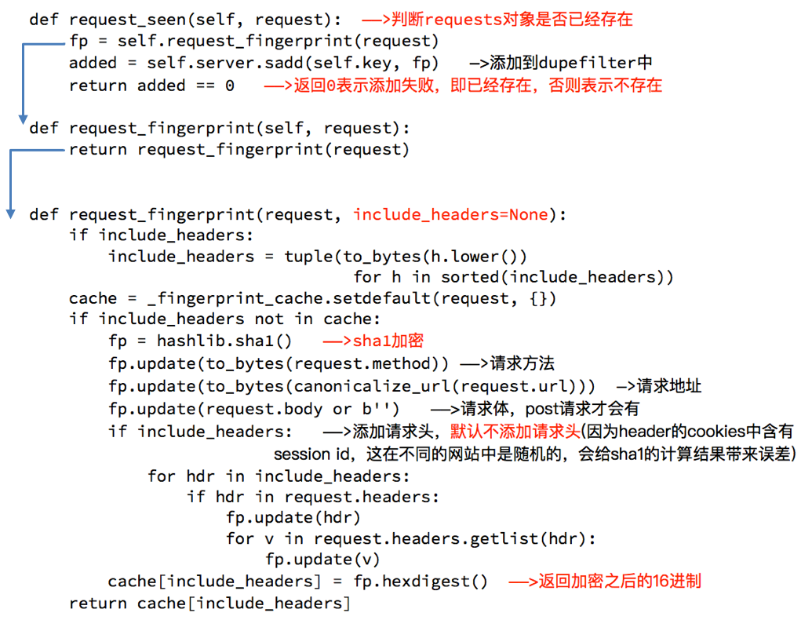
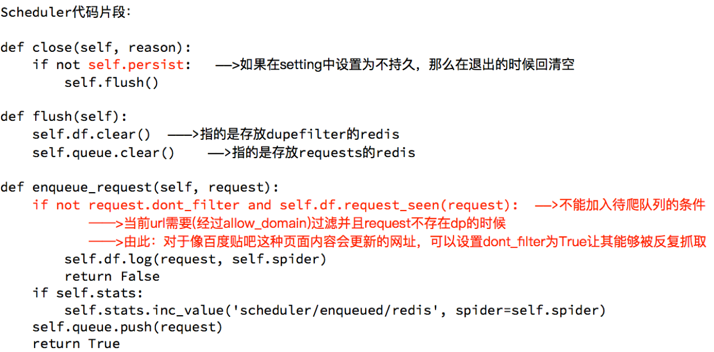

scrapy_redis原理分析并实现断点续爬以及分布式爬虫
学习目标
- 了解 scrapy实现去重的原理
- 了解 scrapy中请求入队的条件
- 掌握 scrapy_redis基于url地址的增量式单机爬虫
- 掌握 scrapy_redis分布式爬虫
1. 下载github的demo代码
clone github scrapy-redis源码文件
git clone https://github.com/rolando/scrapy-redis.git研究项目自带的demo
mv scrapy-redis/example-project ~/scrapyredis-project
2. 观察dmoz文件
在domz爬虫文件中，实现方式就是之前的crawlspider类型的爬虫
from scrapy.linkextractors import LinkExtractor
from scrapy.spiders import CrawlSpider, Rule
class DmozSpider(CrawlSpider):
"""Follow categories and extract links."""
name = 'dmoz'
allowed_domains = ['dmoztools.net']
start_urls = ['http://dmoztools.net/'] # 这里修改了url
# 定义数据提取规则，使用了css选择器
rules = [
Rule(LinkExtractor(
restrict_css=('.top-cat', '.sub-cat', '.cat-item')
), callback='parse_directory', follow=True),
]
def parse_directory(self, response):
for div in response.css('.title-and-desc'):
yield {
'name': div.css('.site-title::text').extract_first(),
'description': div.css('.site-descr::text').extract_first().strip(),
'link': div.css('a::attr(href)').extract_first(),
}
但是在settings.py中多了以下内容,这几行表示scrapy_redis中重新实现的了去重的类，以及调度器，并且使用RedisPipeline管道类
DUPEFILTER_CLASS = "scrapy_redis.dupefilter.RFPDupeFilter"
SCHEDULER = "scrapy_redis.scheduler.Scheduler"
SCHEDULER_PERSIST = True
ITEM_PIPELINES = {
'example.pipelines.ExamplePipeline': 300,
'scrapy_redis.pipelines.RedisPipeline': 400,
}
3. 运行dmoz爬虫，观察现象
- 首先我们需要添加redis的地址，程序才能够使用redis
REDIS_URL = "redis://127.0.0.1:6379"
#或者使用下面的方式
# REDIS_HOST = "127.0.0.1"
# REDIS_PORT = 6379
- 我们执行domz的爬虫，会发现redis中多了一下三个键：

- 中止进程后再次运行dmoz爬虫
继续执行程序，会发现程序在前一次的基础之上继续往后执行，所以domz爬虫是一个基于url地址的增量式的爬虫
4. scrapy_redis的原理分析
我们从settings.py中的三个配置来进行分析 分别是：
- RedisPipeline # 管道类
- RFPDupeFilter # 指纹去重类
- Scheduler # 调度器类
- SCHEDULER_PERSIST # 是否持久化请求队列和指纹集合
4.1 Scrapy_redis之RedisPipeline
RedisPipeline中观察process_item，进行数据的保存，存入了redis中

4.2 Scrapy_redis之RFPDupeFilter
RFPDupeFilter 实现了对request对象的加密

4.3 Scrapy_redis之Scheduler
scrapy_redis调度器的实现了决定什么时候把request对象加入带抓取的队列，同时把请求过的request对象过滤掉

4.4 由此可以总结出request对象入队的条件
- request的指纹不在集合中
- request的dont_filter为True，即不过滤
- start_urls中的url地址会入队，因为他们默认是不过滤
4.5 实现单机断点续爬
改写网易招聘爬虫，该爬虫就是一个经典的基于url地址的增量式爬虫
5. 实现分布式爬虫
5.1 分析demo中代码
打开example-project项目中的myspider_redis.py文件
通过观察代码：
- 继承自父类为RedisSpider
- 增加了一个redis_key的键，没有start_urls，因为分布式中，如果每台电脑都请求一次start_url就会重复
- 多了
__init__方法，该方法不是必须的，可以手动指定allow_domains - 启动方法：
- 在每个节点正确的目录下执行
scrapy crawl 爬虫名，使该节点的scrapy_redis爬虫程序就位 - 在共用的redis中
lpush redis_key 'start_url'，使全部节点真正的开始运行
- 在每个节点正确的目录下执行
- settings.py中关键的配置
DUPEFILTER_CLASS = "scrapy_redis.dupefilter.RFPDupeFilter"
SCHEDULER = "scrapy_redis.scheduler.Scheduler"
SCHEDULER_PERSIST = True
ITEM_PIPELINES = {
'example.pipelines.ExamplePipeline': 300,
'scrapy_redis.pipelines.RedisPipeline': 400,
}
REDIS_URL = "redis://127.0.0.1:6379"
5.2 动手实现分布式爬虫
改写tencent爬虫为分布式爬虫
注意：启动方式发生改变
小结
scrapy_redis的含义和能够实现的功能
- scrapy是框架
- scrapy_redis是scrapy的组件
- scrapy_redis能够实现断点续爬和分布式爬虫
scrapy_redis流程和实现原理
- 在scrapy框架流程的基础上，把存储request对象放到了redis的有序集合中，利用该有序集合实现了请求队列
- 并对request对象生成指纹对象，也存储到同一redis的集合中，利用request指纹避免发送重复的请求
request对象进入队列的条件
- request的指纹不在集合中
- request的dont_filter为True，即不过滤
request指纹的实现
- 请求方法
- 排序后的请求地址
- 排序并处理过的请求体或空字符串
- 用hashlib.sha1()对以上内容进行加密
scarpy_redis实现增量式爬虫、布式爬虫
- 对setting进行如下设置
- DUPEFILTER_CLASS = "scrapy_redis.dupefilter.RFPDupeFilter"
- SCHEDULER = "scrapy_redis.scheduler.Scheduler"
- SCHEDULER_PERSIST = True
- ITEM_PIPELINES = {'scrapy_redis.pipelines.RedisPipeline': 400,}
- REDIS_URL = "redis://127.0.0.1:6379" # 请正确配置REDIS_URL
- 爬虫文件中的爬虫类继承RedisSpider类
- 爬虫类中redis_key替代了start_urls
- 启动方式不同
- 通过
scrapy crawl spider启动爬虫后，向redis_key放入一个或多个起始url（lpush或rpush都可以），才能够让scrapy_redis爬虫运行
- 通过
- 除了以上差异点以外，scrapy_redis爬虫和scrapy爬虫的使用方法都是一样的
- 对setting进行如下设置